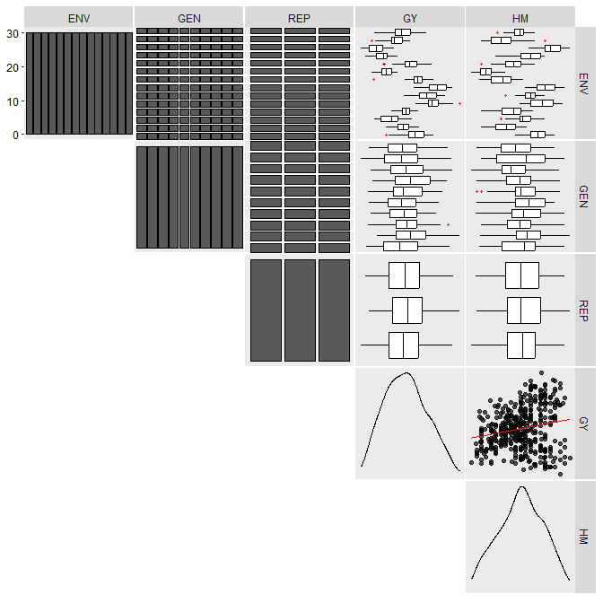
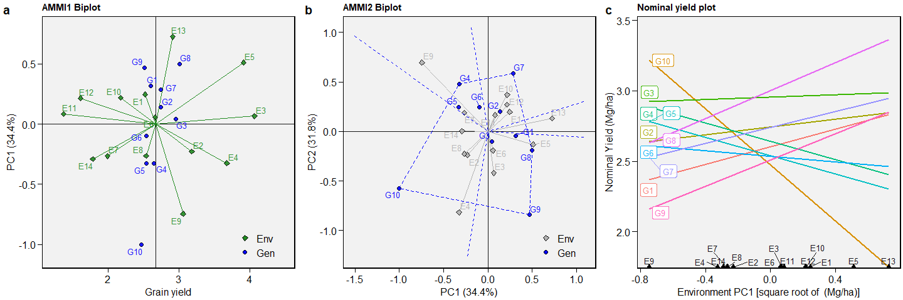
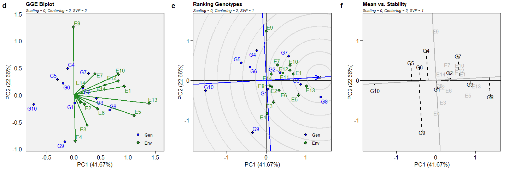
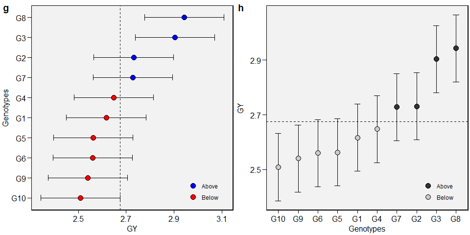

metan (multi-environment trials analysis) provides useful functions for analyzing multi-environment trial data using parametric and non-parametric methods. The package will help you to:
- Inspect data for possible common errors;
- Manipulate rows and columns;
- Manipulate numbers and strings;
- Compute descriptive statistics;
- Compute within-environment analysis of variance;
- Compute AMMI analysis with prediction considering different numbers of interaction principal component axes;
- Compute AMMI-based stability indexes;
- Compute GGE biplot analysis;
- Compute GT and GYT biplot analysis;
- Compute BLUP-based stability indexes;
- Compute variance components and genetic parameters in mixed-effect models;
- Perform cross-validation procedures for AMMI-family and BLUP models;
- Compute parametric and nonparametric stability statistics
- Implement biometrical models
For more details see the complete vignette.
Installation
Install the released version of metan from CRAN with:
install.packages("metan")Or install the development version from GitHub with:
devtools::install_github("TiagoOlivoto/metan")
# To build the HTML vignette use
devtools::install_github("TiagoOlivoto/metan", build_vignettes = TRUE)Note: If you are a Windows user, you should also first download and install the latest version of Rtools.
For the latest release notes on this development version, see the NEWS file.

Getting started
metan offers a set of functions that can be used to manipulate, summarize, analyze and plot typical multi-environment trial data. Maybe, one of the first functions users should use would be inspect(). Here, we will inspect the example dataset data_ge that contains data on two variables assessed in 10 genotypes growing in 14 environments.
library(metan)
inspect(data_ge, plot = TRUE)
# # A tibble: 5 x 9
# Variable Class Missing Levels Valid_n Min Median Max Outlier
# <chr> <chr> <chr> <chr> <int> <dbl> <dbl> <dbl> <dbl>
# 1 ENV factor No 14 420 NA NA NA NA
# 2 GEN factor No 10 420 NA NA NA NA
# 3 REP factor No 3 420 NA NA NA NA
# 4 GY numeric No - 420 0.67 2.61 5.09 0
# 5 HM numeric No - 420 38 48 58 0
No issues while inspecting the data. If any issue is given here (like outliers, missing values, etc.) consider using find_outliers() to find possible outliers in the data set or any metan’s data manipulation tool such as remove_na_rows() to remove rows with NA values, to_factor() to convert desired columns to factor, find_text_in_num() to find text fragments in columns assumed to be numeric, or even tidy_strings() to tidy up strings.
Descriptive statistics
metan provides a set of functions to compute descriptive statistics. The easiest way to do that is by using desc_stat().
desc_stat(data_ge2)
# # A tibble: 15 x 9
# variable cv max mean median min sd.amo se ci
# <chr> <dbl> <dbl> <dbl> <dbl> <dbl> <dbl> <dbl> <dbl>
# 1 CD 7.34 18.6 16.0 16 12.9 1.17 0.0939 0.186
# 2 CDED 5.71 0.694 0.586 0.588 0.495 0.0334 0.0027 0.0053
# 3 CL 7.95 34.7 29.0 28.7 23.5 2.31 0.185 0.365
# 4 CW 25.2 38.5 24.8 24.5 11.1 6.26 0.501 0.99
# 5 ED 5.58 54.9 49.5 49.9 43.5 2.76 0.221 0.437
# 6 EH 21.2 1.88 1.34 1.41 0.752 0.284 0.0228 0.045
# 7 EL 8.28 17.9 15.2 15.1 11.5 1.26 0.101 0.199
# 8 EP 10.5 0.660 0.537 0.544 0.386 0.0564 0.0045 0.0089
# 9 KW 18.9 251. 173. 175. 106. 32.8 2.62 5.18
# 10 NKE 14.2 697. 512. 509. 332. 72.6 5.82 11.5
# 11 NKR 10.7 42 32.2 32 23.2 3.47 0.277 0.548
# 12 NR 10.2 21.2 16.1 16 12.4 1.64 0.131 0.259
# 13 PERK 2.17 91.8 87.4 87.5 81.2 1.90 0.152 0.300
# 14 PH 13.4 3.04 2.48 2.52 1.71 0.334 0.0267 0.0528
# 15 TKW 13.9 452. 339. 342. 218. 47.1 3.77 7.44AMMI model
Fitting the model
The AMMI model is fitted with the function performs_ammi(). To analyze multiple variables at once we can use a comma-separated vector of unquoted variable names, or use any select helper in the argument resp. Here, using everything() we apply the function to all numeric variables in the data. For more details, see the complete vignette.
model <- performs_ammi(data_ge,
env = ENV,
gen = GEN,
rep = REP,
resp = everything(),
verbose = FALSE)
# Significance of IPCAs
get_model_data(model, "ipca_pval")
# Class of the model: performs_ammi
# Variable extracted: Pr(>F)
# # A tibble: 9 x 4
# PC DF GY HM
# <chr> <dbl> <dbl> <dbl>
# 1 PC1 21 0 0
# 2 PC2 19 0 0
# 3 PC3 17 0.0014 0.0021
# 4 PC4 15 0.00960 0.0218
# 5 PC5 13 0.318 0.0377
# 6 PC6 11 0.561 0.041
# 7 PC7 9 0.754 0.0633
# 8 PC8 7 0.804 0.232
# 9 PC9 5 0.934 0.944Biplots
The well-known AMMI1 and AMMI2 biplots can be created with plot_scores(). Note that since performs_ammi allows analyzing multiple variables at once, e.g., resp = c(v1, v2, ...), the output model is a list, in this case with two elements (GY and HM). By default, the biplots are created for the first variable of the model. To choose another variable use the argument var (e.g., var = "HM").
a <- plot_scores(model)
b <- plot_scores(model,
type = 2,
polygon = TRUE,
col.env = "gray70",
col.segm.env = "gray70",
axis.expand = 1.5)
c <- plot_scores(model, type = 4)
arrange_ggplot(a, b, c, labels = letters[1:3], nrow = 1)
GGE model
The GGE model is fitted with the function gge(). For more details, see the complete vignette.
model <- gge(data_ge, ENV, GEN, GY)
model2 <- gge(data_ge, ENV, GEN, GY, svp = "genotype")
model3 <- gge(data_ge, ENV, GEN, GY, svp = "symmetrical")
d <- plot(model)
e <- plot(model2, type = 8)
f <- plot(model2,
type = 2,
col.gen = "black",
col.env = "gray70",
axis.expand = 1.5)
arrange_ggplot(d, e, f, labels = letters[4:6], nrow = 1)
BLUP model
Linear-mixed effect models to predict the response variable in METs are fitted using the function waasb(). Here we will obtain the predicted means for genotypes in the variables GY and HM. For more details, see the complete vignette.
model2 <- waasb(data_ge,
env = ENV,
gen = GEN,
rep = REP,
resp = everything())
# Method: REML/BLUP
# Random effects: GEN, GEN:ENV
# Fixed effects: ENV, REP(ENV)
# Denominador DF: Satterthwaite's method
# ---------------------------------------------------------------------------
# P-values for Likelihood Ratio Test of the analyzed traits
# ---------------------------------------------------------------------------
# model GY HM
# COMPLETE NA NA
# GEN 1.11e-05 5.07e-03
# GEN:ENV 2.15e-11 2.27e-15
# ---------------------------------------------------------------------------
# All variables with significant (p < 0.05) genotype-vs-environment interaction
# Get the variance components
get_model_data(model2, what = "vcomp")
# Class of the model: waasb
# Variable extracted: vcomp
# # A tibble: 3 x 3
# Group GY HM
# <chr> <dbl> <dbl>
# 1 GEN 0.0280 0.490
# 2 GEN:ENV 0.0567 2.19
# 3 Residual 0.0967 2.84Plotting the BLUPs for genotypes
To produce a plot with the predicted means, use the function plot_blup().
g <- plot_blup(model2)
h <- plot_blup(model2,
prob = 0.1,
col.shape = c("gray20", "gray80")) + ggplot2::coord_flip()
arrange_ggplot(g, h, labels = letters[7:8])
Computing parametric and non-parametric stability indexes
The easiest way to compute parametric and non-parametric stability indexes in metan is by using the function ge_stats(). It is a wrapper function around a lot of specific functions for stability indexes. To get the results into a “ready-to-read” file, use get_model_data() or its shortcut gmd().
stats <- ge_stats(data_ge, ENV, GEN, REP, GY)
get_model_data(stats)
# Class of the model: ge_stats
# Variable extracted: stats
# # A tibble: 10 x 33
# var gen Y CV Var Shukla Wi_g Wi_f Wi_u Ecoval bij Sij
# <chr> <chr> <dbl> <dbl> <dbl> <dbl> <dbl> <dbl> <dbl> <dbl> <dbl> <dbl>
# 1 GY G1 2.60 35.2 10.9 0.0280 84.4 89.2 81.1 1.22 1.06 -0.00142
# 2 GY G10 2.47 42.3 14.2 0.244 59.2 64.6 54.4 7.96 1.12 0.177
# 3 GY G2 2.74 34.0 11.3 0.0861 82.8 95.3 75.6 3.03 1.05 0.0497
# 4 GY G3 2.96 29.9 10.1 0.0121 104. 99.7 107. 0.725 1.03 -0.0128
# 5 GY G4 2.64 31.4 8.93 0.0640 85.9 79.5 91.9 2.34 0.937 0.0298
# 6 GY G5 2.54 30.6 7.82 0.0480 82.7 82.2 82.4 1.84 0.887 0.00902
# 7 GY G6 2.53 29.7 7.34 0.0468 83.0 83.7 81.8 1.81 0.861 0.00304
# 8 GY G7 2.74 27.4 7.33 0.122 83.9 77.6 93.4 4.16 0.819 0.0579
# 9 GY G8 3.00 30.4 10.8 0.0712 98.8 90.5 107. 2.57 1.03 0.0382
# 10 GY G9 2.51 42.4 14.7 0.167 68.8 68.9 70.3 5.56 1.19 0.0938
# # ... with 21 more variables: R2 <dbl>, ASV <dbl>, SIPC <dbl>, EV <dbl>,
# # ZA <dbl>, WAAS <dbl>, HMGV <dbl>, RPGV <dbl>, HMRPGV <dbl>, Pi_a <dbl>,
# # Pi_f <dbl>, Pi_u <dbl>, Gai <dbl>, S1 <dbl>, S2 <dbl>, S3 <dbl>, S6 <dbl>,
# # N1 <dbl>, N2 <dbl>, N3 <dbl>, N4 <dbl>Citation
citation("metan")
Please, support this project by citing it in your publications!
Olivoto, T., and Lúcio, A.D. (2020). metan: an R package for
multi-environment trial analysis. Methods Ecol Evol. 11:783-789
doi:10.1111/2041-210X.13384
A BibTeX entry for LaTeX users is
@Article{Olivoto2020,
author = {Tiago Olivoto and Alessandro Dal'Col L{'{u}}cio},
title = {metan: an R package for multi-environment trial analysis},
journal = {Methods in Ecology and Evolution},
volume = {11},
number = {6},
pages = {783-789},
year = {2020},
doi = {10.1111/2041-210X.13384},
url = {https://besjournals.onlinelibrary.wiley.com/doi/abs/10.1111/2041-210X.13384},
eprint = {https://besjournals.onlinelibrary.wiley.com/doi/pdf/10.1111/2041-210X.13384},
}Getting help
If you encounter a clear bug, please file a minimal reproducible example on github
Suggestions and criticisms to improve the quality and usability of the package are welcome!